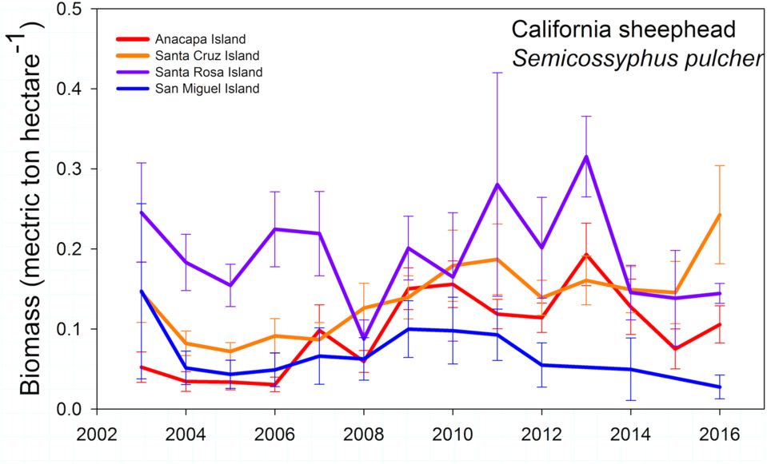
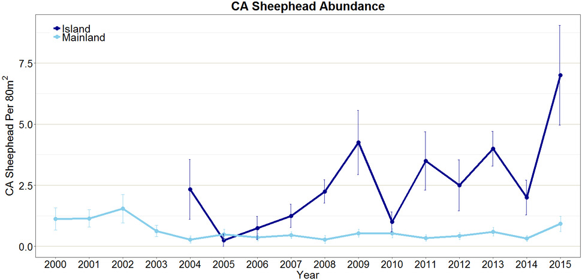

This species of wrasse are quite common in kelp forests in Southern California. Known for their bright pink coloration (in females) and large heads and teeth (in males) these fish are actually hermaphrodites! Born female, the largest individual in a population transforms into a conspicuous male.
Trend: PISCO

A figure showing the density of California sheephead (Semicossyphys pulcher) around the four Northern Channel Islands from 2003 to 2016. Monitoring data provided by the PISCO kelp forest monitoring program.
Click for Details
Average density (+/- standard error) of California sheephead Semicossyphus pulcher at 14 sites across four islands in Channel Islands National Marine Sanctuary monitored by the PISCO kelp forest monitoring program from 2003 to 2016. Sheephead are counted by SCUBA divers swimming along transect lines. Observed density was averaged across all monitoring sites at each island, including sites located inside and outside of marine reserves and conservation areas, to examine course-scale trends by island. At a finer scale, sheephead density is responding differently inside and outside of some marine protected areas (MPAs) in CINMS. A discussion of MPA effects in CINMS is available in MPA Effects. For more information, consult Figure App.F.12.12 in the CINMS 2016 Condition Report.Trend: CHIS

A figure showing the average density of California Sheephead across the five Northern Channel Islands from 2005 to 2016. Monitoring data provided by the Channel Island National Park kelp forest monitoring program.
Click for Details
Average density (+/- standard error) of California sheephead Semicossyphus pulcher at Channel Islands National Park kelp forest monitoring sites at the five islands in CINMS. Recent increases in average density of sheephead were observed at every island except for San Miguel (blue). Sheephead density was averaged across all monitoring sites at each island, including sites located inside and outside of marine reserves and conservation areas, to examine course-scale trends by island. At a finer scale, sheephead density is responding differently inside and outside of some marine protected areas (MPAs) in CINMS. A discussion of MPA effects in CINMS is available in MPA Effects. Note that juveniles (< 10 centimeters) were excluded from analysis. For more information, consult Figure App.F.12.13 in the CINMS 2016 Condition Report.Trend: LTER

A figure showing the average number of California sheephead around two of the Channel Islands (dark blue) and on the mainland (light blue) from 2000 to 2015. Data source: SBC LTER; Figure credit: R. Freedman/NOAA.